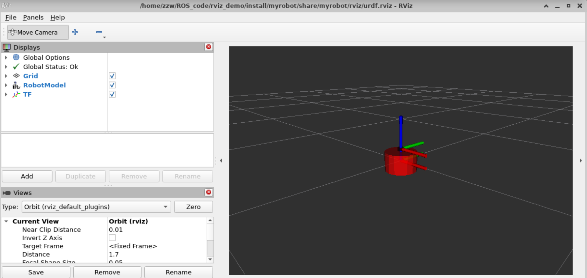

rviz2显示机器人模型¶
URDF 不能单独使用，需要结合 Rviz 或 Gazebo，URDF 只是一个文件，需要在 Rviz 或 Gazebo 中渲染成图形化的机器人模型，当前，首先演示URDF与Rviz的集成使用，因为URDF与Rviz的集成较之于URDF与Gazebo的集成更为简单。
创建工作空间和功能包¶
首先创建一个名为rviz_demo工作空间，然后创建一个src目录。在src中存放功能包。
mkdir -p rviz_demo/src
cd rviz_demo/src
ros2 pkg create myrobot --build-type ament_camke
├── include
├── launch
│ ├── demo01_launch.py
├── src
└── urdf
├── demo01_base.urdf
├── CMakeLists.txt
├── package.xml
URDF文件¶
这里我们就使用之前一个简单的URDF文件作为演示
<?xml version="1.0"?>
<robot name="myrobot">
<!-- base link -->
<link name="base_link">
<visual>
<origin xyz="0 0 0.0" rpy="0 0 0"/>
<geometry>
<cylinder length="0.12" radius="0.10"/>
</geometry>
</visual>
</link>
<!-- laser link -->
<link name="laser_link">
<visual>
<origin xyz="0 0 0" rpy="0 0 0"/>
<geometry>
<cylinder length="0.02" radius="0.02"/>
</geometry>
<material name="black">
<color rgba="0.0 0.0 0.0 0.8" />
</material>
</visual>
</link>
<!-- laser joint -->
<joint name="laser_joint" type="fixed">
<parent link="base_link" />
<child link="laser_link" />
<origin xyz="0 0 0.075" />
</joint>
</robot>
install(
DIRECTORY launch urdf
DESTINATION share/${PROJECT_NAME}
)
Launch文件¶
想要可视化模型需要三个节点参与： * joint_state_publisher_gui 负责发布机器人关节数据信息，通过joint_states话题发布 * robot_state_publisher_node负责发布机器人模型信息robot_description，并将joint_states数据转换tf信息发布 * rviz2_node负责显示机器人的信息
这三个节点的关系可以如下图所示：
这里我们用到了joint_state_publisher_gui和robot_state_publisher两个包，如果你的系统没有安装这两个包，可以手动安装:
sudo apt install ros-humble-joint-state-publisher-gui ros-humble-robot-state-publisher
这个例子中我们没有给关节设置能动，所以并没有数据。首先分别看三个节点如何启动配置的。 第一个robot_state_publisher
robot_description = ParameterValue(
Command(['xacro ', urdf_model_path]),
value_type=str)
robot_state_publisher_node = Node(
package='robot_state_publisher',
executable='robot_state_publisher',
parameters=[{'robot_description': robot_description}]
)
arguments=[urdf_model_path],
这样写会报一个警告：
No robot_description parameter, but command-line argument available. Assuming argument is name of URDF file.This backwards compatibility fallback will be removed in the future.
大致意思就是说通过arguents传入urdf文件将会在未来版本中被移除，建议加上robot_description参数。
下面看第二个节点：joint_state_publisher_gui
joint_state_publisher_node = Node(
package='joint_state_publisher_gui',
executable='joint_state_publisher_gui',
name='joint_state_publisher_gui',
arguments=[urdf_model_path]
)
最后我们需要启动最后的一个节点rviz节点
rviz2_node = Node(
package='rviz2',
executable='rviz2',
name='rviz2',
output='screen',
arguments=['-d', LaunchConfiguration('rvizconfig')],
)
然后我们需要手动添加一些组件才能将我们的机器人显示出来：  例如上图中，我们添加TF和RobotModel组件，然后选组坐标系，才能将最终的机器人进行显示。显示后我们可以将配置进行保存，保存后的文件放在当前目录的rviz文件夹下，通过launch文件的配置，可以初始化我们的rviz图形界面的配置。
完整的launch代码如下。
import os
from launch import LaunchDescription
from launch.substitutions import LaunchConfiguration
from launch_ros.actions import Node
from launch_ros.substitutions import FindPackageShare
from launch.actions import DeclareLaunchArgument
from launch.substitutions import Command
from launch_ros.parameter_descriptions import ParameterValue
def generate_launch_description():
package_name = 'myrobot'
urdf_name = "demo01_base.urdf"
ld = LaunchDescription()
pkg_share = FindPackageShare(package=package_name).find(package_name)
urdf_model_path = os.path.join(pkg_share, f'urdf/{urdf_name}')
default_rviz_config_path = os.path.join(pkg_share ,'rviz/urdf.rviz')
robot_description = ParameterValue(Command(['xacro ', urdf_model_path]),
value_type=str)
rviz_arg = DeclareLaunchArgument(name='rvizconfig', default_value=str(default_rviz_config_path),
description='Absolute path to rviz config file')
robot_state_publisher_node = Node(
package='robot_state_publisher',
executable='robot_state_publisher',
parameters=[{'robot_description': robot_description}]
)
joint_state_publisher_node = Node(
package='joint_state_publisher_gui',
executable='joint_state_publisher_gui',
name='joint_state_publisher_gui',
arguments=[urdf_model_path]
)
rviz2_node = Node(
package='rviz2',
executable='rviz2',
name='rviz2',
output='screen',
arguments=['-d', LaunchConfiguration('rvizconfig')],
)
ld.add_action(rviz_arg)
ld.add_action(joint_state_publisher_node)
ld.add_action(robot_state_publisher_node)
ld.add_action(rviz2_node)
return ld
测试运行¶
使用命令编译运行文件
colcon build
. install/setup.bash
ros2 launch myrobot demo01_launch.py